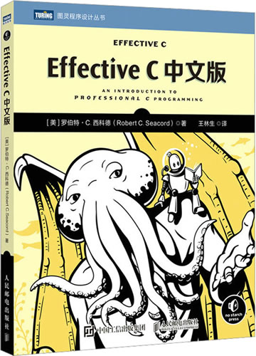

首页 > 书籍下载
《Effective C中文版》PDF下载（高清完整版）
|  | 作者：[美]罗伯特·C.西科德 |
| 译者：王林生 | |
| 出版时间：2023年04月01日 | |
| 出版社：人民邮电出版社 | |
| 书号ISBN：9787115612953 | |
| 总页数：208 |
这是一本经典的 C 语言入门书籍，语言凝练，内容涵盖 C17 和 C2x 新标准，适合对 C 语言感兴趣、想系统学习 C 语言的读者。
这里提供的是《Effective C中文版》的高清 PDF 下载，内容完整，附带目录标签。
和其它同类的 C 语言书籍相比，这本书的内容既全面又有深度，不仅讲解了 C 语言的基础语法，还对一些知识点做了深度的剖析。更可贵的是，书籍最后单独用一章的内容教读者调试程序，调试程序是每个程序员的基本功之一。
一位购买了这本书的读者给出的评价是：
非常不错，专业知识严谨，介绍的很详细，很有帮助。
书籍目录
- 第1章 C语言入门 1
- 1.1 编写第一个C程序 1
- 1.2 编辑器和集成式开发环境 5
- 1.3 编译器 7
- 1.4 可移植性 8
- 1.5 小结 11
- 第2章 对象、函数和类型 12
- 2.1 对象、函数、类型和指针 12
- 2.2 声明变量 13
- 2.3 作用域 17
- 2.4 存储期 18
- 2.5 对齐方式 19
- 2.6 对象类型 20
- 2.7 函数类型 23
- 2.8 派生类型 24
- 2.9 标签 28
- 2.10 类型限定符 30
- 2.11 练习 32
- 2.12 小结 32
- 第3章 算术类型 33
- 3.1 整数 33
- 3.2 浮点 42
- 3.3 算术转换 46
- 3.4 小结 52
- 第4章 表达式和运算符 53
- 4.1 简单赋值 53
- 4.2 求值 55
- 4.3 函数调用 55
- 4.4 递增运算符和递减运算符 56
- 4.5 运算符优先级和结合性 57
- 4.6 求值顺序 59
- 4.7 sizeof运算符 61
- 4.8 算术运算符 62
- 4.9 按位运算符 64
- 4.10 逻辑运算符 68
- 4.11 转换运算符 70
- 4.12 条件运算符 71
- 4.13 _Alignof运算符 71
- 4.14 关系运算符 72
- 4.15 复合赋值运算符 73
- 4.16 逗号运算符 73
- 4.17 指针算术 74
- 4.18 小结 75
- 第5章 控制流 76
- 5.1 表达式语句 76
- 5.2 复合语句 77
- 5.3 选择语句 77
- 5.4 迭代语句 83
- 5.5 跳转语句 87
- 5.6 练习 91
- 5.7 小结 91
- 第6章 动态分配内存 92
- 6.1 存储期 92
- 6.2 内存管理函数 94
- 6.3 内存状态 101
- 6.4 柔性数组成员 102
- 6.5 其他的动态分配内存 103
- 6.6 调试存储分配问题 108
- 6.7 练习 110
- 6.8 小结 110
- 第7章 字符和字符串 111
- 7.1 字符 111
- 7.2 字符串 123
- 7.3 字符串处理函数 125
- 7.4 小结 136
- 第8章 输入/输出 137
- 8.1 标准I/O流 137
- 8.2 打开文件和创建文件 140
- 8.3 关闭文件 144
- 8.4 读写字符和行 145
- 8.5 流冲洗 147
- 8.6 设置文件内部位置 148
- 8.7 删除文件和重命名文件 150
- 8.8 使用临时文件 151
- 8.9 读取格式化文本流 151
- 8.10 读写二进制流 154
- 8.11 小结 157
- 第9章 预处理器 159
- 9.1 编译过程 159
- 9.2 文件包含 160
- 9.3 条件包含 161
- 9.4 宏定义 164
- 9.5 小结 170
- 第10章 程序结构 171
- 10.1 组件化原则 171
- 10.2 可执行文件 174
- 10.3 链接 175
- 10.4 组织一个简单的程序 177
- 10.5 构建代码 181
- 10.6 小结 183
- 第11章 调试、测试和分析 184
- 11.1 断言 184
- 11.2 编译器设置和选项 188
- 11.3 调试 192
- 11.4 单元测试 195
- 11.5 静态分析 198
- 11.6 动态分析 200
- 11.7 练习 204
- 11.8 小结 205
书籍下载
一键登录，免费下载完整版 PDF，文件名称：《Effective C中文版》.pdf